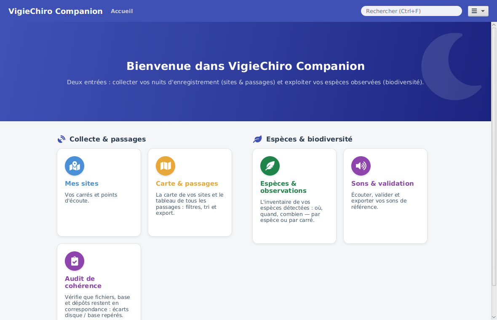
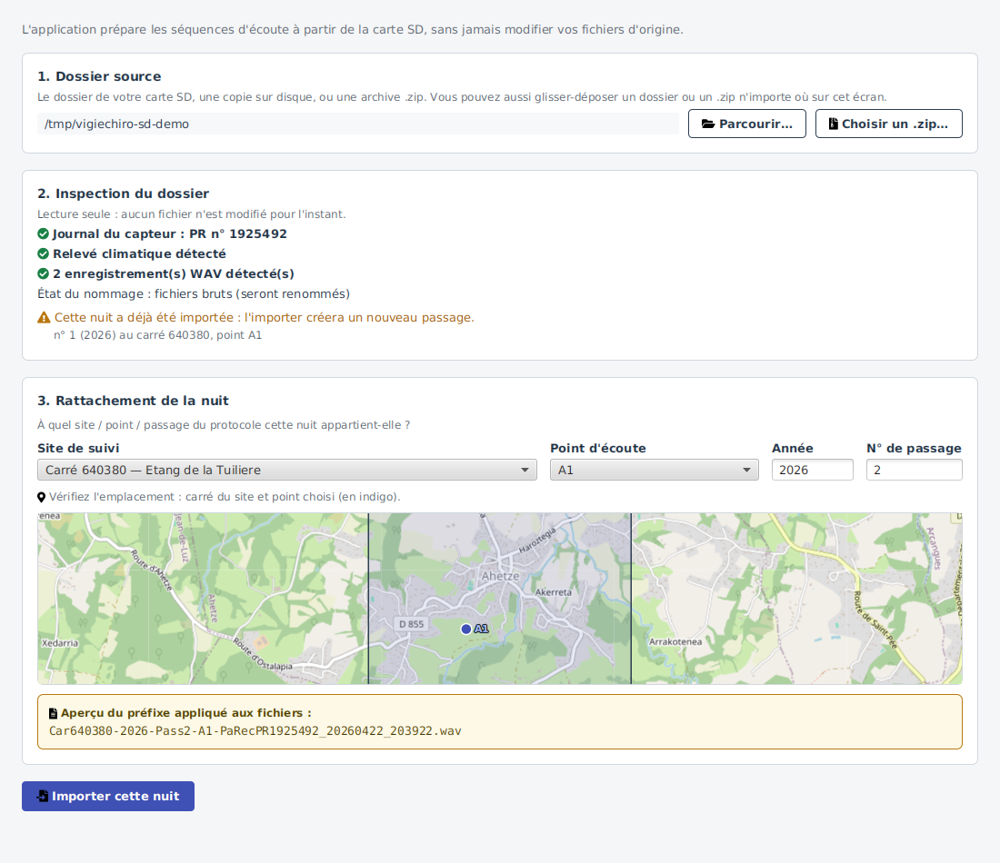
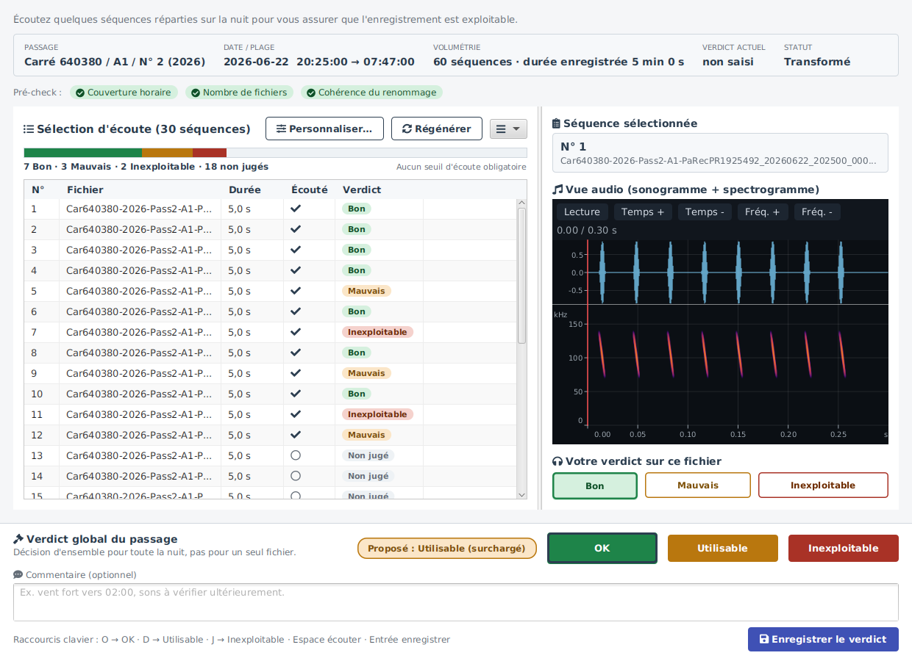
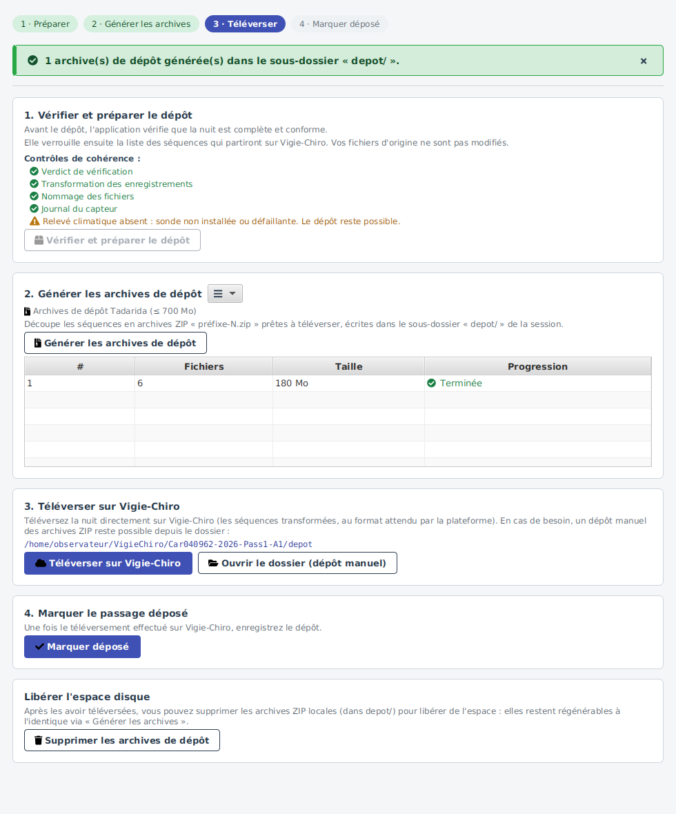
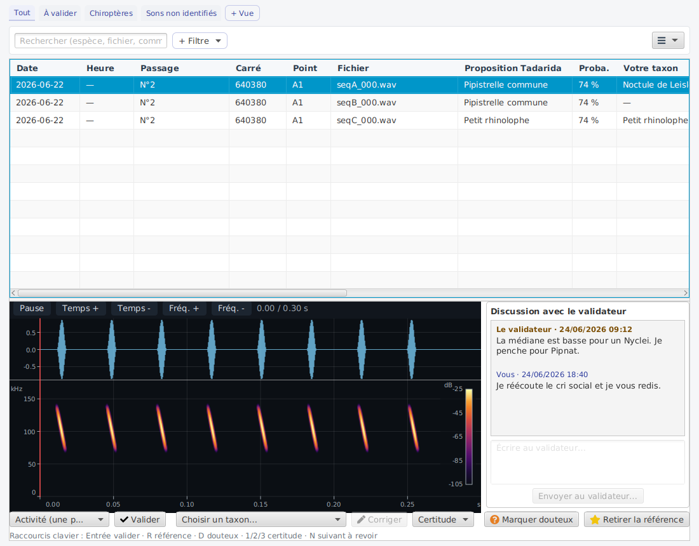
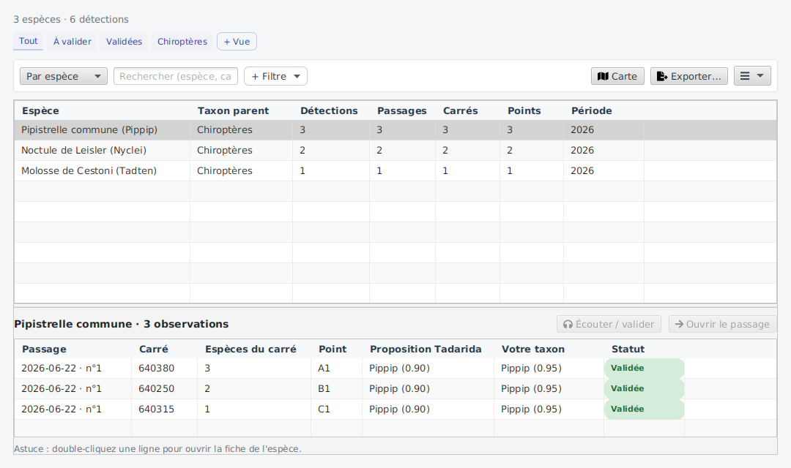
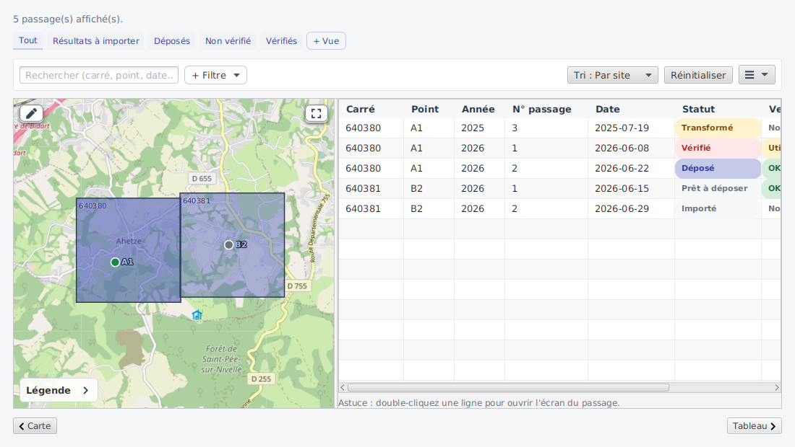

Une nuit d'enregistrement, du terrain au dépôt
Des enregistreurs autonomes posés sur le terrain captent les ultrasons d'une nuit entière. Restent ensuite des milliers de fichiers à trier, vérifier, nommer et déposer.
VigieChiro Companion prend en charge cette chaîne : importer la carte SD, vérifier la qualité des enregistrements, préparer et suivre le dépôt sur la plateforme nationale, puis relire les espèces identifiées par Tadarida. Sans tableur, sans script, sans outil tiers.

L'application

Six écrans, six moments de la nuit
Chaque étape du parcours a son écran. Cliquez sur une vignette pour la voir en grand.
-

Importer la carte SD devient une nuit rattachée -

Vérifier écouter, juger, décider du passage -

Déposer contrôler, archiver, téléverser -

Relire les espèces confirmer ou corriger Tadarida -

Explorer les espèces que la nuit a livrées -

Suivre où en est chaque nuit
{kind=link}
{kind=link}
{kind=link}
{kind=link}
{kind=link}
{kind=link}
Aller plus loin
Guide d'utilisation
Installer, prendre en main, comprendre chaque écran.
Dossier de conception
Le besoin, le modèle de données, les parcours et les maquettes.
Documentation développeur
Architecture, conventions, et comment contribuer au code.
Code source
Le dépôt, les tickets et les versions publiées.